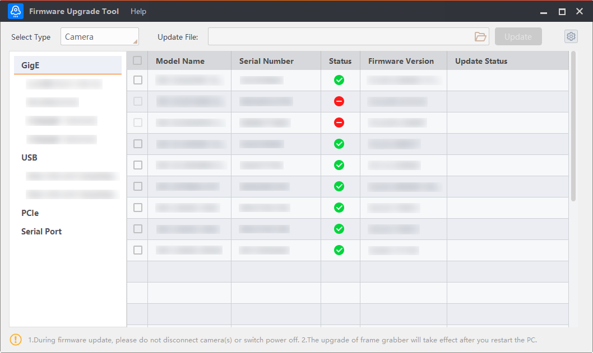
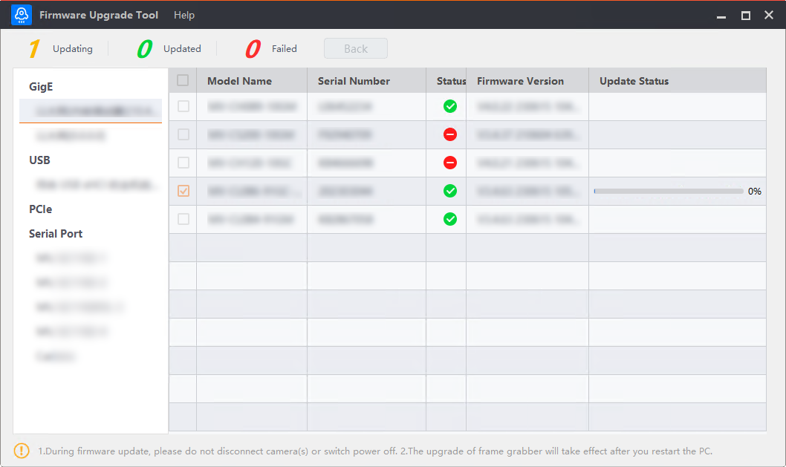

Upgrade a Camera
The camera firmware upgrading process mainly contains three parts, and they are Search for Device, Start to Upgrade, and View Upgrading Status.
Search for Devices
After you open the Tool, you can select a camera in the Select Type area, and you can see the computer interface information displayed on the left. The available operations may vary according to devices with different interfaces.

Figure 1 Upgrade a CameraUpgrade Camera Firmware
-
GigE and USB Interfaces:
-
Select GigE or USB, and the devices that can be found will be displayed on the right pane.
-
Select an interface under GigE or USB, and the devices that can be found will be displayed on the right pane.
-
The Tool can automatically refresh the devices under the enumeration of GigE and USB, or click
 to manually refresh
the enumeration.
to manually refresh
the enumeration.
-
-
PCIe Interface:
-
Select PCIe, and the devices that can be found will be displayed on the right pane.
-
Select an interface under PCIe, and the devices that can be found will be displayed on the right pane.
-
The Tool can automatically refresh the devices under the enumeration of PCIe, or click
to manually refresh
the enumeration.
-
-
Serial Port Interface:
-
Select Serial Port, and the available devices will be displayed on the right pane.
-
Select an interface from Serial Port, and the available devices of the interface will be displayed on the right pane.
-
By default, the camera information under Serial Port will not be refreshed automatically. You can click
on the right side of
the Serial Port to refresh the enumeration manually.
-
Start to Upgrade
Check if the camera to be upgraded is available. Click to select a firmware upgrade package (dav file) in the upper right side of the Tool.
The Tool can upgrade the firmware of multiple cameras in a batch. Up to 20 cameras can be selected at the same time.
-
If the upgrade package is for a specific model, only cameras of the same model can be upgraded in batch. For cameras of other models, the status bar will prompt "Upgrading failed. (Error code: 0x900006500) Firmware mismatch.".
-
If the upgrade package is for multiple models, you can upgrade the cameras of multiple models in the upgrade package. For cameras of the other models that are not included in the upgrade package, if you upgrade them, the status bar will prompt "Upgrading Failed. (Error code: 0x900006500) Firmware mismatch.".
After selecting the firmware upgrading package, click Upgrade.
-
Do not disconnect the camera from the PC during firmware upgrade.
-
The camera will reboot automatically after upgrading.

Figure 2 Upgrading ProcessView Upgrading Status
In the upper-left corner, the upgrading information is displayed as shown below. You can click Back on the top of the Tool to go back to the initial interface. Also, on the right of the Tool, the upgrading status information of a selected device is displayed.